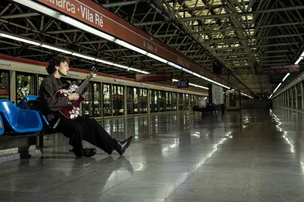
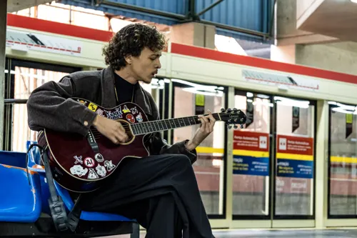
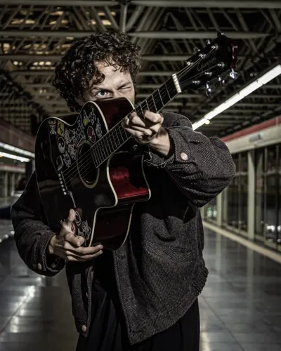
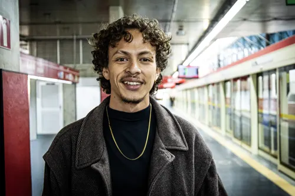
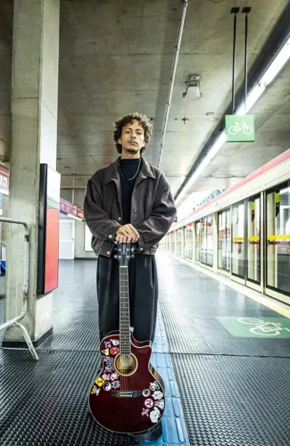
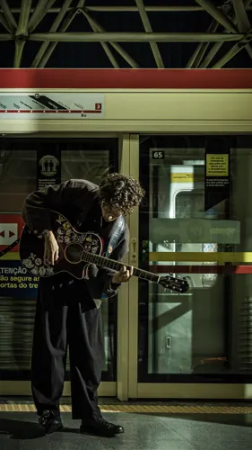
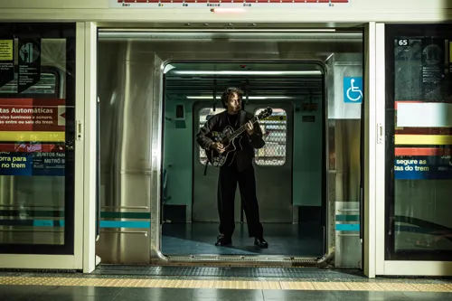
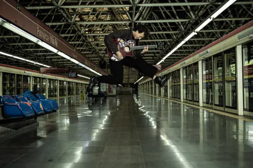
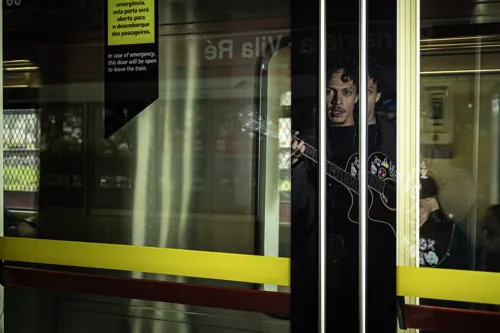
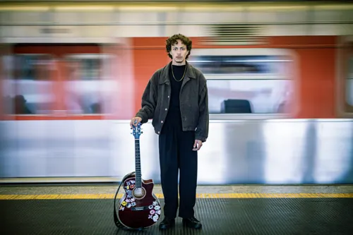

Artista em destaque · São Paulo
Nourrant.
Entre plataformas, trilhos e acordes, a música encontra espaço no cotidiano da cidade.
A cidade como cenário. A música como expressão.
Nas fotografias, Nourrant aparece em diferentes momentos com seu violão, que acompanha sua voz: entre plataformas, bancos e portas dos trens. O ensaio alterna movimento e contemplação, com a energia das poses em ação, a intimidade dos retratos e o contraste entre o músico e a arquitetura do transporte público.
O resultado é o retrato de um artista que ocupa a cidade com voz, violão e presença, e que pode ser consultado para a sua ocasião.
Entre plataformas, trilhos e acordes.
Nourrant em movimento.
Fotografias mostram presença; o vídeo mostra a música acontecendo.
Se o vídeo não carregar, assista direto no YouTube.
Nourrant em imagens.
Um olhar documental sobre presença, movimento e identidade artística no metrô de São Paulo. Cada fotografia é exibida inteira, sem cortes.










Leve Nourrant para o seu evento.
Consulte diretamente o artista sobre disponibilidade, repertório e condições de apresentação.
Contato direto, sem intermediação nem comissão da plataforma. O botão é demonstrativo até a inclusão do WhatsApp autorizado do artista.